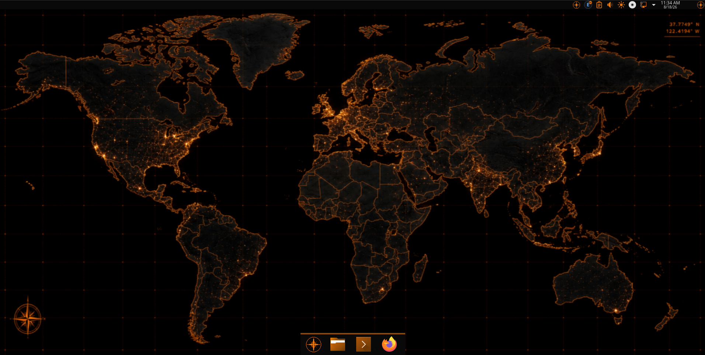
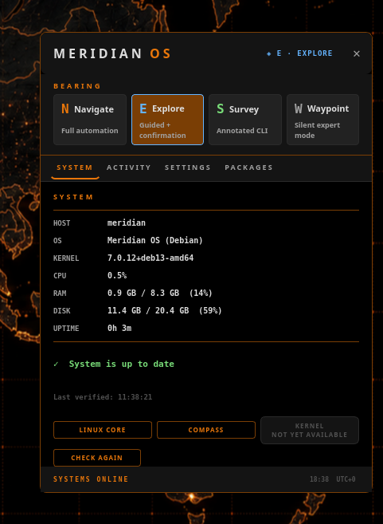
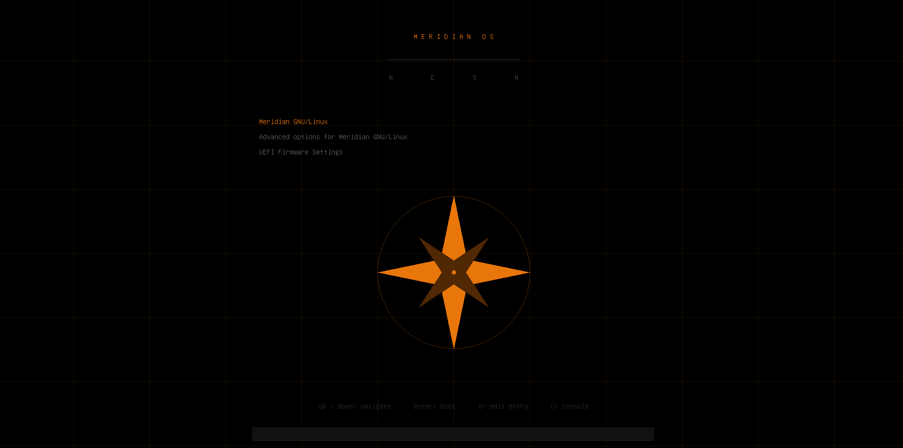

What this is
Meridian OS runs on Debian 13 with KDE Plasma 6. On the surface it's a clean, themed desktop. Its real job is to give Compass somewhere to live while it gets built.
Compass is the guidance layer, and it's the reason this release exists. Here it works as a package manager with a guided front end: it helps you run command-line tasks, handles updates, and keeps the basic global settings in one place. What you see is a first pass at a framework the finished Meridian will be built on.
Compass

The panel is the front door. It shows the state of the machine, checks for updates, and manages them by channel: the Linux core, Compass itself, and a slot held for the Meridian kernel once Rose is ready. Packages and activity live here too.
Four ways to work
Compass has four modes, set by how much help you want. It calls them bearings.
- Navigate: full automation. Compass does the work and tells you what it did.
- Explore: guided, with a confirmation step before anything runs.
- Survey: an annotated CLI. You run the commands; Compass explains them as you go.
- Waypoint: silent expert mode. It stays out of the way and assumes you know what you're doing.
The same tool fits someone in their first week on Linux and someone who has lived in a terminal for years. Nobody gets talked down to, and nobody gets left stranded.
Themed end to end
The look isn't skin-deep. It starts at the bootloader and carries all the way through.

At a glance
- Base
- Debian 13 "Trixie" · KDE Plasma 6
- Role
- Proof-of-concept for Compass
- Compass
- Guided package manager, updates, and settings
- Status
- v1.0-b1, first beta
- License
- Open source, free to use
Where this is headed
Meridian on Debian is a starting point, not the destination. The long-term goal is a full operating system of its own: a fourth option alongside Windows, macOS, and Linux that can run their software natively, without the friction that usually comes with mixing platforms. It stays open source and free to use, with nothing essential locked behind a license.
The other half of the plan is intelligence built into the system itself. Not a chatbot bolted onto the desktop, and not something that acts on its own. A set of layered systems that work together, each earning more authority the further out it sits from the firmware. Trust is built up level by level from the BIOS outward, instead of handed to everything at once.
Compass is the first piece of that to take shape, which is why it's being built here first, on a base that already works. Rose, the kernel, is another piece, started from scratch. Each part is built on its own, then brought together into one coherent system later on.
It's a long project, and an honest one: one person and a computer. It'll take the time it takes. Progress shows up on the changelog.
Want to watch it come together? Follow Meridian on GitHub, or check the changelog for what's shipped.